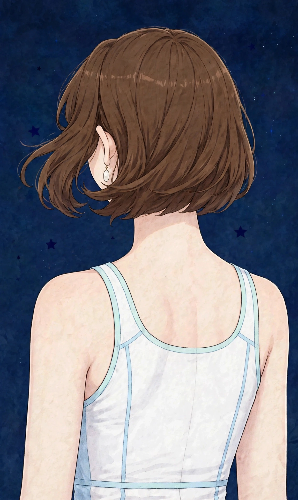

梅田で季節の変わり目に気になる頭痛｜要因の整理とセルフケア、受診の目安ハウツー

朝晩の冷え込みと日中の暖かさが入れ替わる季節の変わり目。「なんとなく頭が重い」「こめかみが気になる日が増えた」と感じる方へ。梅田で働く・暮らす女性に向けて、季節の変わり目に頭痛を感じやすいとされる要因の整理と、日常で取り入れられるセルフケア、医療機関への受診の目安をまとめました。一般的な健康情報としてお読みください。
#梅田 頭痛#季節の変わり目 頭痛#頭痛 セルフケア#気圧 頭 重い#梅田 女性専用 サロン 頭痛
季節の変わり目と頭痛の関係（一般的な解説）
頭痛にはさまざまな現れ方があり、こめかみが脈打つように痛むタイプ、頭全体が締め付けられるように重く感じるタイプなどが知られています。季節の変わり目は、そのどちらも「気になりやすい時期」として挙げられることがあります。
背景のひとつとして考えられているのが、気温や気圧の変化です。天気の移り変わりが大きい時期は、体が外の変化に合わせようと働き、自律神経のバランスがゆらぎやすくなるとされます。もちろん個人差は大きく、「季節のせい」と一言で決められるものではありません。この記事では、症状の一般的な解説と、要因として考えられるものの整理からお伝えします。
考えられる要因の整理
1つ目は、寒暖差による首・肩のこわばりです。朝晩の冷えで体が縮こまると、首や肩の筋肉が緊張しやすくなります。頭を支える筋肉の緊張が続くことが、頭の重さや締め付け感として感じられる背景のひとつとされます。
2つ目は、生活リズムと眠りの乱れです。季節の節目は仕事や行事の予定も変わりやすく、就寝時刻がずれたり、眠りが浅くなったりしがちです。眠りの不足や質の低下は、翌日の頭の重さと関係づけられることがあります。
3つ目は、目と姿勢の負担です。日が短くなり、照明や画面を見る時間が長くなる時期は、目の疲れ感やうつむき姿勢が積み重なりやすく、首・肩まわりの負担につながると考えられます。東洋医学では、こうした状態を「気・血の巡りの滞り」と捉えることもあり、頭部は多くの経絡が集まる部位とされてきました。要因はひとつではなく、その日の天候や体調、働き方によって組み合わせが変わります。
頭痛と関係しやすい首の後ろと付け根は、図1のとおりです。
図1｜首の後ろと付け根

日常で取り入れられるセルフケア
まずは「温める」ことです。首元をストールなどで覆う、帰宅後に湯船につかって首・肩まで温める、といった工夫は、冷えてこわばった筋肉をゆるめる助けになります。蒸しタオルを首の付け根に当てる方法も手軽です。やけどには十分注意してください。
次に「動かす」ことです。首をゆっくり横に倒すストレッチや、肩甲骨を寄せたり開いたりする動きを、仕事の合間に挟んでみてください。強く回したり、痛みを感じるほど伸ばしたりする必要はありません。指の腹で頭皮そのものをゆっくり動かすケアも、ほぐれ感を感じやすい方法のひとつです。
あわせて、水分をこまめに取ること、眠る前の画面時間を区切って就寝リズムを整えることも、季節の変わり目の体調管理の基本とされます。セルフケアはあくまで日常の疲れ感への対処です。痛みが強い日は無理をせず、休むことを優先してください。
季節の変わり目のケアで挙げられる代表的なツボは、図2のとおりです。
図2｜季節の変わり目のケアで挙げられるツボ

受診の目安｜こんなときは医療機関へ
頭痛の多くは日常の疲れや緊張と関係するとされますが、中には早めの受診が必要なサインもあります。「今までにないほど突然強く痛む」「手足のしびれや動かしにくさ、ろれつの回りにくさを伴う」「発熱や嘔吐を伴う」「頭をぶつけたあとに痛みが出てきた」「市販の痛み止めを使う回数が増えてきた」といった場合は、セルフケアで様子を見続けず、医療機関への受診をおすすめします。
また、痛みの頻度や強さが少しずつ増えている場合や、日常生活に支障が出ている場合も、一度相談してみてください。当店のケアはリラクゼーションを目的としたボディケアで、頭痛を診断・治療するものではありません。医療機関での確認を優先したうえで、日常のコンディションを整える選択肢のひとつとしてご利用ください。
当店でのケアとサロンのご案内
ステラポラリスは、大阪・梅田エリアのレンタルサロンで施術する女性専用・完全予約制のサロンです。営業は月〜土17:00〜22:00（日曜休み）、施術はオイルマッサージと美容整体、料金は90分10,000円です。ご予約はLINE公式アカウント「ポラリス美容整体院」で受付中です。場所は大阪市北区堂山町12-5 ロイヤルハイツ梅田Ⅱ 303号室（レンタルサロンACE内）、中崎町駅から徒歩5分・阪急梅田駅から徒歩8分です。入室方法の詳細はご予約確定後にLINEでご案内します。
施術では、頭部だけでなく、その土台となる首・肩・肩甲骨まわりや背中までを順にほぐし、巡りを意識したケアを行います。担当は施術歴30年・鍼灸師資格を持つセラピスト1名で、当店では鍼灸施術は行いません。関連するお悩みページ「頭の重さ」「目の疲れ感」でも、ケアの考え方を紹介していますので、あわせてご覧ください。
関連するお悩みページ
関連する経絡ページ
ほかのブログ記事
さらに学びたい方へ：現場で使われる専門書（PR）
このページのテーマに合わせて選んだ本と、当店の施術でも参考にしている専門書です。


※本ブロックのリンクはAmazonアソシエイト・プログラムおよび楽天アフィリエイトによる広告リンクです。使用感の保証をするものではありません。